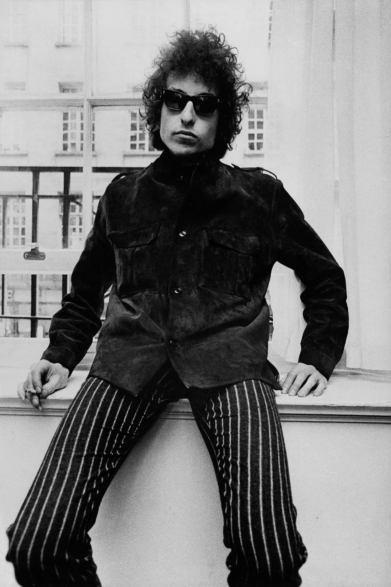
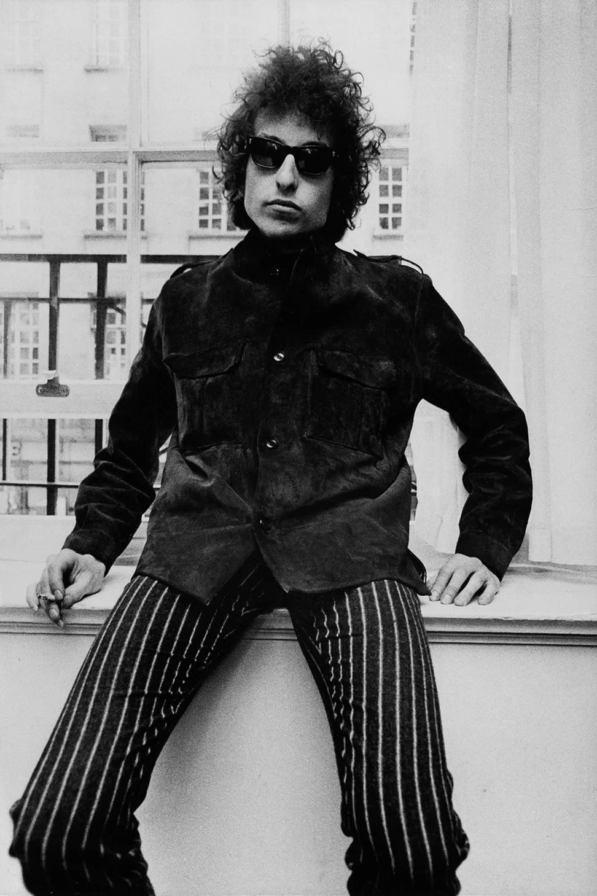

You are invited to Sam's Bob Dylan Core Birthday
When: Friday, December 15 at 7:00pm PST - 11:30pm PST
Where: 1223 SE 37th Ave, Portland OR 97219
Theme: Bob Dylan Core
"Bob Dylan Core" (noun) is a TikTok trend that erupted in March of 2023. In this trend, people dress like Bob Dylan circa 1963. Some trademark looks include, but are not limited to, canvas coats, corduroys, denim, leather shoes, messy hair, long fingernails, and cigarettes.
 
